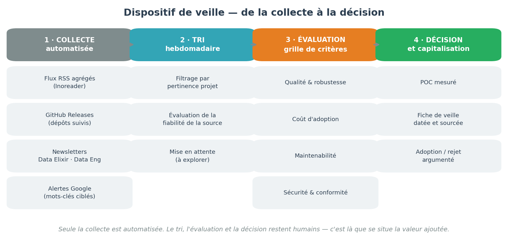
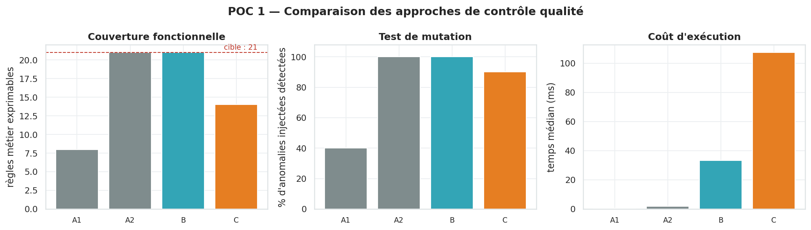
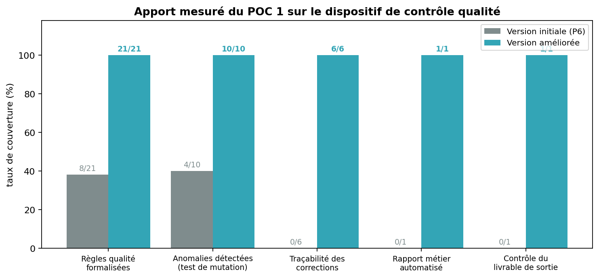
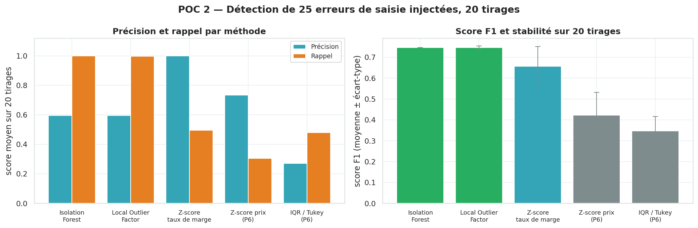

Data Analyst. Mon travail commence rarement par un modèle : il commence par la question « ces chiffres sont-ils fiables, et comment le prouver ? » Dix projets, six secteurs, et une conviction — une analyse dont on ne connaît pas les angles morts n'est pas exploitable.
Ce ne sont pas des intentions : chacun se vérifie dans les projets ci-dessous.
Dire qu'un dispositif est perfectible ne vaut rien. Sur Bottleneck, j'ai injecté dix anomalies dans les données pour mesurer ce que les contrôles rattrapaient réellement : 4 sur 10. Un chiffre change une conversation, un adjectif non.
Chaque projet comporte une section « limites » aussi détaillée que les résultats. Une analyse dont on ignore les angles morts n'est pas exploitable — et un commanditaire à qui l'on cache une incertitude la découvrira au pire moment.
Un indicateur qui n'aide pas à trancher ne répond pas au besoin. Chaque projet se termine par des recommandations chiffrées et hiérarchisées, assorties de leur point de vigilance.
Trois projets démontrent trois choses différentes : la rigueur méthodologique, le niveau technique, et la capacité à traiter une question stratégique ouverte. Les sept autres montrent l'étendue du parcours. Cliquez sur une carte pour le détail complet — contexte, données, démarche, résultats et limites.
Une veille sans question préalable produit une bibliothèque qu'on ne relit jamais. La mienne part toujours d'un besoin identifié sur un projet en cours, et se termine par une décision argumentée — y compris une décision de rejet.

Seule la collecte est automatisée, et c'est délibéré. Les outils de résumé automatique produisent des synthèses plausibles mais lissées, qui font disparaître exactement ce qui a de la valeur : les limites, les conditions d'usage, les désaccords entre auteurs. L'automatisation sert à ne rien manquer, pas à éviter de lire.
Le mécanisme le plus utile est le moins connu. Tout dépôt GitHub public expose un flux à l'adresse /releases.atom, lisible par n'importe quel agrégateur RSS.
La pondération est explicite parce qu'elle est discutable. Dans un autre contexte — industrialisation multi-équipes, forte volumétrie — elle changerait, et la décision avec elle. C'est ce qui distingue un arbitrage d'une préférence.
Quatre critères : l'auteur est identifiable et compétent ; la date est visible ; les affirmations sont vérifiables (code, chiffres, protocole) ; les limites sont énoncées. Une source qui ne présente que des avantages est de la communication, pas de l'information.
| Solution | Motif du rejet |
|---|---|
| Great Expectations | 107 dépendances pour un projet mono-analyste, et pas d'attente native inter-colonnes — or c'est exactement là que se situent les règles métier à plus forte valeur. Condition de révision documentée : en cas d'industrialisation multi-équipes, il redevient le bon choix. |
| Soda Core | Pensé pour des sources SQL. Sans intérêt sur des fichiers Excel locaux. |
| Evidently | Répond à une autre question : surveiller une dérive, pas valider une source. Pertinent à l'étape suivante, pas maintenant. |
| Résumé automatique de la veille | Les synthèses générées lissaient les limites et les conditions d'usage — précisément ce qui a de la valeur. Abandonné. |
Comparer des outils sur leur documentation n'a pas de valeur probante. Les deux expérimentations ci-dessous reposent sur un protocole de mesure, avec des résultats reproductibles — graines fixées, versions figées.
Le fichier ERP est ré-extrait chaque mois. Existe-t-il une manière de contrôler sa qualité qui soit explicite, exhaustive et rejouable — sans infrastructure dédiée ?
Dix anomalies réalistes sont injectées dans une copie des données — identifiant dupliqué, prix négatif, prix d'achat nul, statut inconnu, marge négative, vente négative. Chaque approche est ensuite exécutée sans être modifiée. Le protocole simule exactement le risque réel : que se passe-t-il le mois prochain si l'export contient un défaut d'un type nouveau ?


| Approche | Règles exprimables | Test de mutation | Temps médian | Dépendances |
|---|---|---|---|---|
| Contrôles au fil de l'eau (état initial) | 8 / 21 | 4 / 10 | 0,5 ms | 1 |
| Contrôles manuels exhaustifs | 21 / 21 | 10 / 10 | 2 ms | 1 |
| Pandera — retenu | 21 / 21 | 10 / 10 | 32 ms | 12 |
| Great Expectations | 14 / 21 | 9 / 10 | 94 ms | 107 |
Pandera — couverture complète, détection maximale, sortie structurée directement exploitable pour produire un rapport métier.
Le résultat le plus intéressant n'est pas celui attendu : l'approche manuelle exhaustive fait aussi bien que l'outil. Je l'ai publié tel quel — le masquer aurait invalidé la démarche. L'écart réel se joue sur la maintenabilité (règles centralisées et versionnées) et la restitution, pas sur la détection.
Le Z-score et l'IQR appliqués au prix signalaient les grands crus — chers légitimement. La bonne question n'est pas « quels produits sont chers ? » mais « quels prix sont probablement erronés ? »
Aucun historique de corrections n'existe. La vérité terrain a donc été construite : 25 erreurs de virgule injectées au hasard, l'expérience répétée sur 20 tirages pour mesurer la stabilité des résultats.

| Méthode | Précision | Rappel | F1 | Faux positifs |
|---|---|---|---|---|
| Isolation Forest (multivarié) | 0,60 | 1,00 | 0,75 | 17 |
| Local Outlier Factor | 0,60 | 1,00 | 0,75 | 17 |
| Z-score sur le taux de marge | 1,00 | 0,50 | 0,66 | 0 |
| Z-score sur le prix (méthode initiale) | 0,73 | 0,30 | 0,42 | 3 |
| IQR / Tukey sur le prix (méthode initiale) | 0,27 | 0,48 | 0,35 | 32 |
Ni l'une ni l'autre seule, mais un dispositif à deux étages. Le Z-score sur la marge atteint 100 % de précision : ce qu'il signale est faux à coup sûr, il devient donc une règle bloquante automatisable. Isolation Forest atteint 100 % de rappel : rien ne lui échappe, il alimente une file de revue hebdomadaire.
Les ~17 faux positifs sont un coût de traitement acceptable pour une revue périodique — d'autant qu'ils désignent des produits atypiques méritant souvent un regard métier.
Les erreurs injectées sont des décalages de virgule, donc de forte amplitude. Le rappel de 100 % est optimiste : des erreurs plus fines — inversion de deux chiffres, prix erroné de 15 % — seraient nettement moins bien détectées. Le résultat vaut pour la classe d'erreurs simulée, pas pour toutes.
Chaque compétence est adossée à un projet où elle a été mise en œuvre.